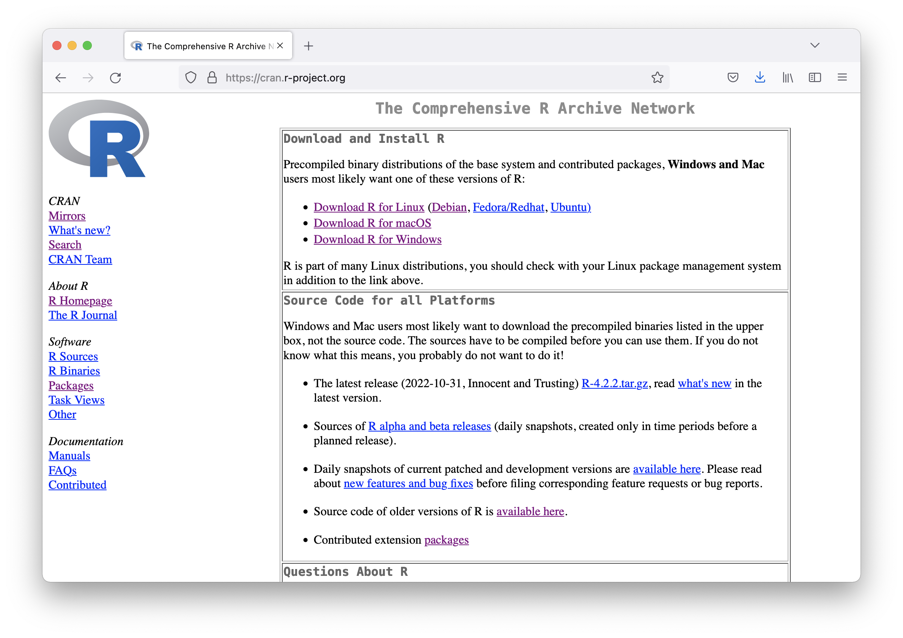
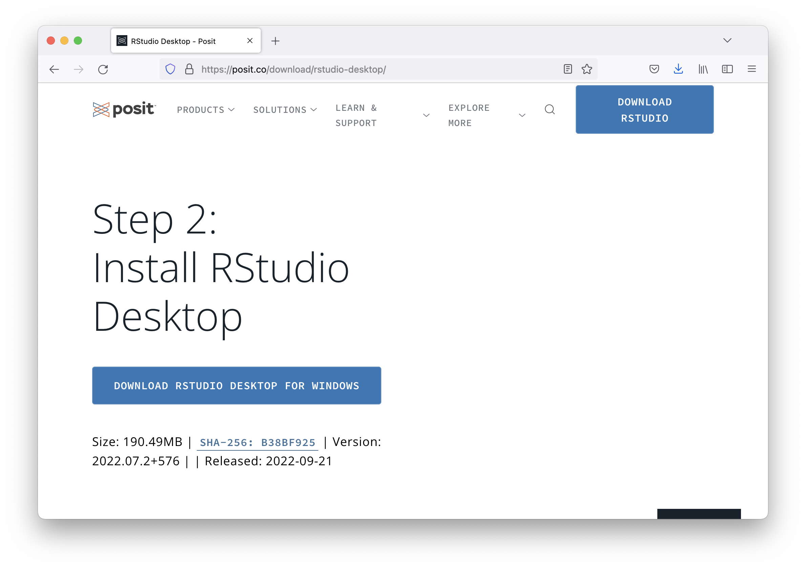
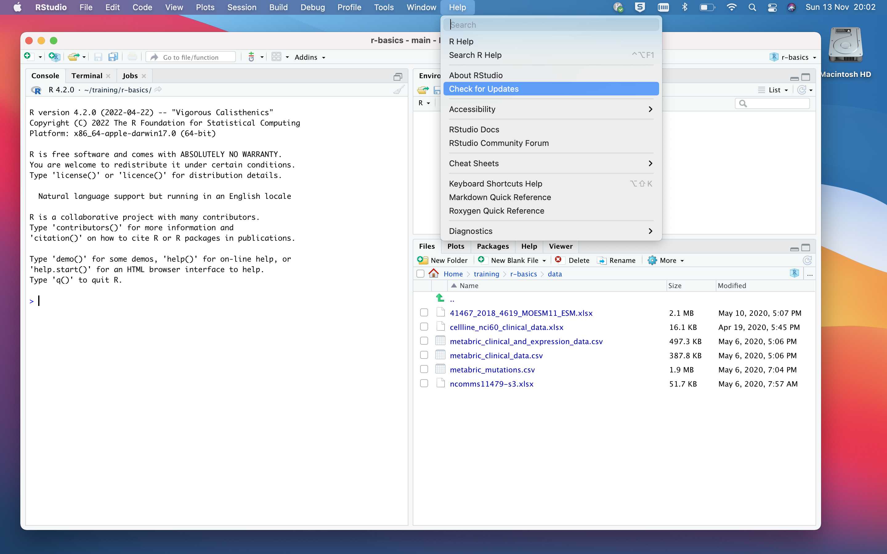
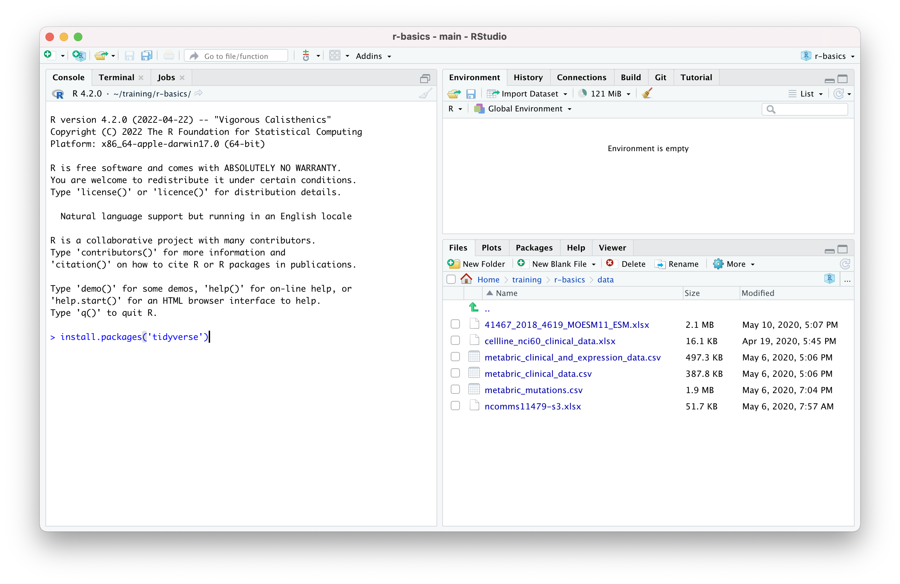
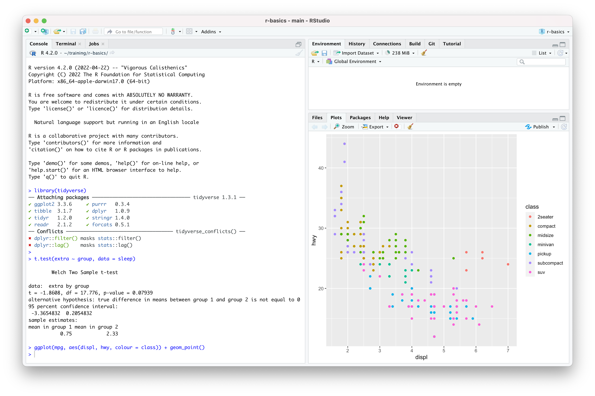

Getting set up
Objectives
- Install R and RStudio
- Install the tidyverse collection of R packages
Introduction
In this course we will be using R, RStudio, and some functions provided by a collection of packages known as the tidyverse.
R is a programming language for statistical computing and graphics. The R system provides an interpreter that executes commands typed at a command line. It also provides a range of statistics and plotting functions out-of-the-box.
Most computational biologists work with R using RStudio, an integrated development environment that provides lots of useful tools to make working in R much easier and more productive. RStudio is a separate program you can install alongside R on your computer. You will usually open RStudio instead of R directly, and use the R session it provides.
One of the compelling reasons to learn R is the vast range of useful packages that have been developed and made available that give you access to specialized functions for just about any data type you can imagine. One of our favourite collections of packages, the tidyverse, is, however, somewhat more general purpose.
It is often the case that data need to be restructured or modified in some way for the required analysis or visualization and the tidyverse packages provide a useful and coherent set of functions for reading and manipulating tabular data. The flexible and very popular ggplot2 package for creating graphs is also part of the tidyverse. Packages such as the tidyverse are easily installed from a menu in RStudio or at the R command prompt.
Installation options
To get ready for the training session you have two options:
Install R and RStudio on your laptop computer
Use a pre-installed R environment by logging into an RStudio server session
Installing R on your own computer is the best choice if you already know you want to work with your data in R. However, if you’re attending the session to see what R can do but are not sure yet if it’s really for you, then using one of the RStudio servers might be the better option. Please note that the servers will only be available for a limited time.
The following instructions are for those who will be installing and running R on their own computer. If you’d prefer to use RStudio server in which everything is already set up, please contact the instructor for login details.
If you already have R and RStudio server installed you may want to check on what versions you are running and consider updating to the latest versions that are available - see the section on upgrading below.
Installing R
Windows
Download the installer from the CRAN website, following the ‘Download R for Windows’ and ‘base’ links
Run the .exe file that you just downloaded, named something like R-4.2.2-win.exe, by clicking on it in the Downloads area in your web browser
Mac OS
Download the installer from the CRAN website, following the ‘Download R for macOS’ link and choosing the installer that matches your hardware, e.g. Apple M1 (ARM) or Intel
Run the .pkg file you just downloaded, named something like R-4.2.2.pkg, by clicking in it in the Downloads area in your web browser

Installing RStudio
Please note that you should install R before you install RStudio.
RStudio is developed by Posit, a company that until recently was confusingly also called RStudio. The desktop version of RStudio is free and versions are available for Windows, Mac OS and Linux.
Download the installer from https://posit.co/download/rstudio-desktop
Run the .exe (Windows) or open the .dmg (Mac OS) file by clicking on it in the downloads area in your web browser
The page contains a button for downloading the RStudio installer and should recognize your operating system. If it doesn’t get it right, e.g. if it suggests you ‘Download RStudio Desktop for Windows’ when you’re using a MacBook, you can scroll further down the page to find links to all the available installers and choose the correct one.

Upgrading from older versions
If you already have R and RStudio server installed you may want to check that you’re using the latest versions. R version 4.0 or above should be ok for this training session.
Open RStudio, and click on “Help” > “Check for updates”. If a new version is available, quit RStudio, and download and install the latest version (see above)
If you’ve just opened RStudio the first thing that appears in the Console window should indicate the version of R you are running. Alternatively you can type
sessionInfo()at the command prompt (>) in the Console window.Check the CRAN website to see whether a more recent version of R is available. If so, download the installer for your operating system (Windows, Mac OS, etc.) and install as described above.

Installing the tidyverse packages
After installing R and RStudio you’ll need to install the tidyverse packages.
Open RStudio from the Start menu in Windows or the Launchpad in Mac OS, i.e. the same way you’d open other programs such as Excel
Locate the ‘Console’ tab
At the command prompt (
>), type the following command:
install.packages('tidyverse')
Check everything is set up correctly
In the Console tab in RStudio, type the following commands at the
> prompt:
library(tidyverse)t.test(extra ~ group, data = sleep)ggplot(mpg, aes(displ, hwy, colour = class)) + geom_point()You should see the same output as in the following screenshot:
